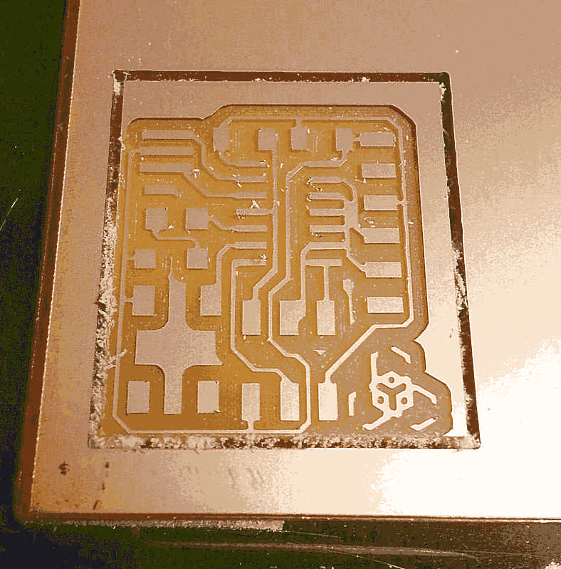
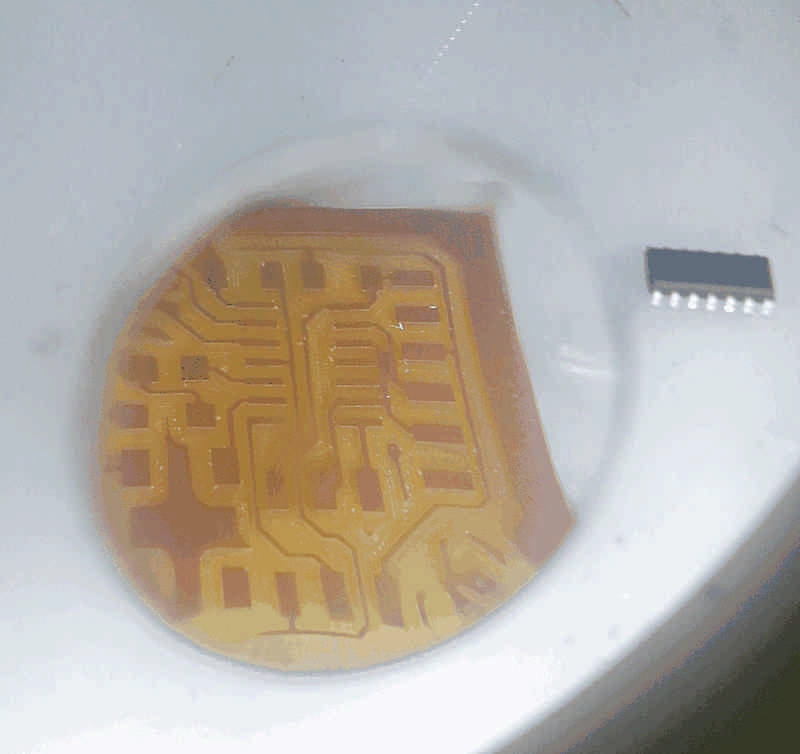
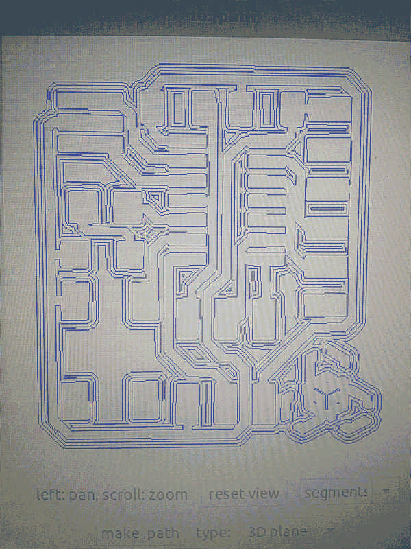
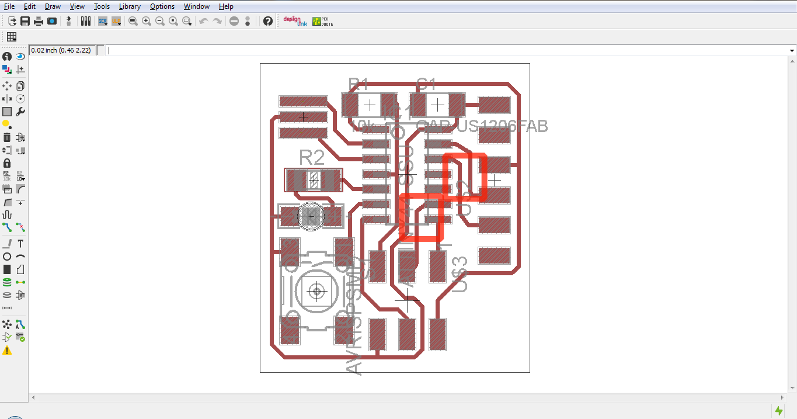
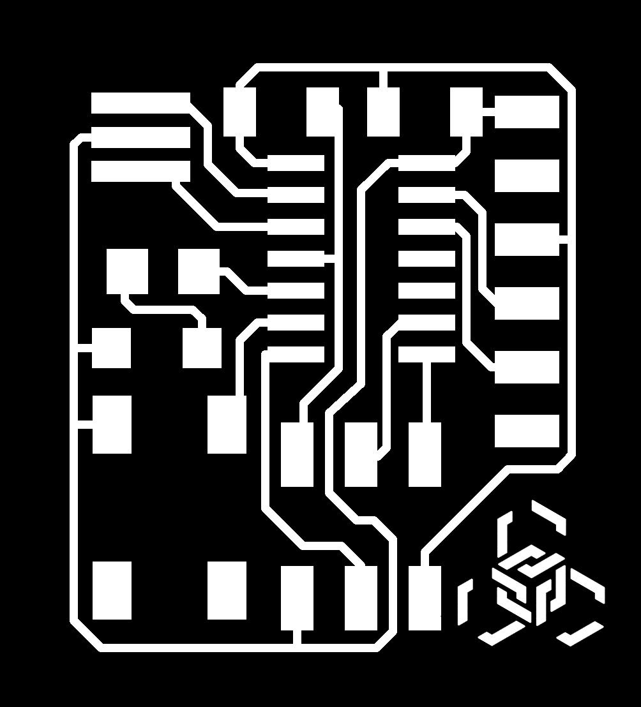
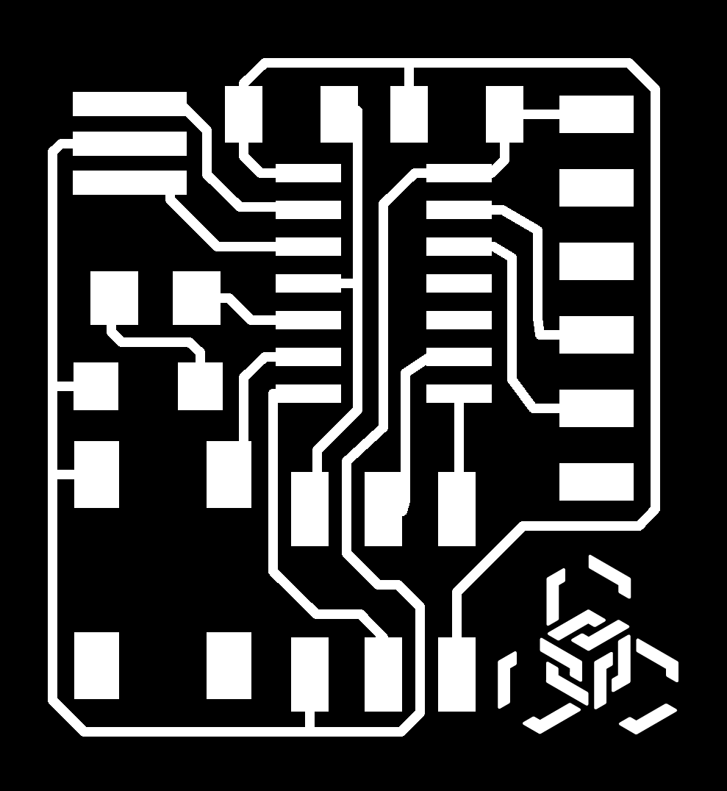
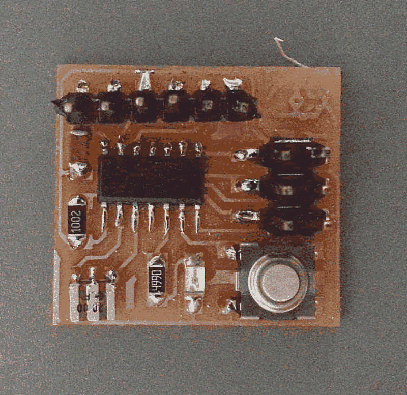
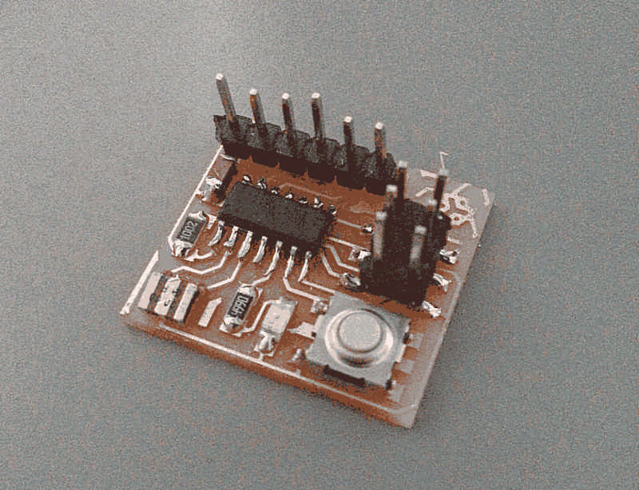
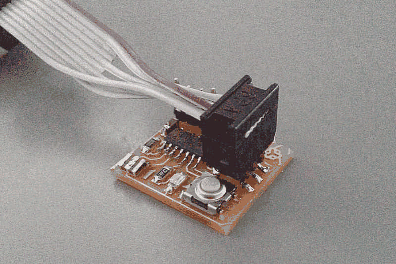

Final Project | Assignments | Download | About | Contact
On wednesday 03.04.2015 we’ve got the sixth online lesson with Neil Gershenfeld.
The next lessons can be found on the Fab Academy account on Vimeo.
For this week the assignment was
** - redraw the echo hello-world board
add (at least) a button and LED
check the design rules, and make it **
The assignment has tree stages
Design the circuit
Hetch and cut the board
Solder the components and verify connections
For this stage I need:
For this assignment I used EagleCad to design the board and the libraries fab.lbr and Sparkfun for the components.
At the beginning I’ve had some trouble with fab library because I simply can’t use Eagle and so I’ve experienced some issue loading the correct and revised library.
At the end I moved away all the libraries that comes with Eagle and I pasted just the libraries in the folder ./EAGLE-7.2.0/lbr; than on the schematic window of Eagle, under the menu ‘Library’ I used the command ‘Use’ to find and load the correct libraries to use with the command ‘Add’.
To design a circuit board you have to design logic connections first, and at the end edit the physical layout. In the schematic you can easily view the logical structure of the circuit, so it’s the perfect environment to design. On the other hand the board window is useful to arrange components, set the path and the width of every vias and doing so determine how the circuit will actually look.
To accomplish this stage I’ve partially followed this tutorial made by Fiore.
For this stage I need:
a milling machine
a 1/64 inch mill to etch
a 1/32 inch mill to cut
The keyword designing this circuit has been “thight”, just because I like to understand what the extreme for the machine to know what the last dimension I can use next time.
The first attempt to hetch the board has failed because of a broken mill; the output has edges of vias and pads not so clean.

At the second attempt the etching was pretty good but…well maybe I touched the limit of the machine: as you can see on the image and on the path calculated with fabmodules some path are short-circuited.




So I fixed the bug putting some space between the vias.
If you pay attention at the following image there is another bug: th connection from GND of the FTDI to the ground path… I soled it simply adding some solder.


At the end what I have in my hands is a very tiny board 22mm by 29.5mm. Fiore says that it’s probably the tiniest helloboard he has ever seen, and I’m very proud of this little goal.

For this stage I need:
a solder iron
solder
a lens
some components: 499 resistor, 10k resistor, 1uf capacitor, 1led, ISP and FTDI pins, and of course an AT tiny44
the board just milled
Even with a so tight board it has been fairy easy solder components.
The only attention I payed was the temperature of the iron: instead of use 400°C I used 320°C to avoid that vias lift up from the base.
And that’s it.
